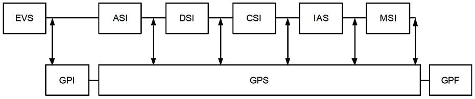
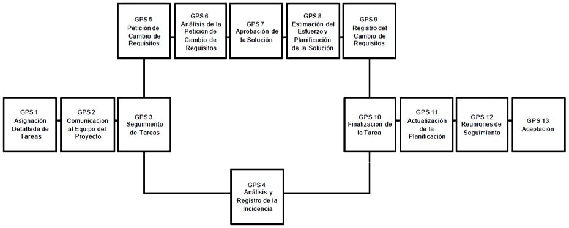

12 Gestión de Proyectos
12.1 Descripción y Objetivos
La Gestión de Proyectos tiene como finalidad principal la planificación, el seguimiento y control de las actividades y de los recursos humanos y materiales que intervienen en el desarrollo de un Sistema de Información. Como consecuencia de este control es posible conocer en todo momento qué problemas se producen y resolverlos o paliarlos de manera inmediata.
La Interfaz de Gestión de Proyectos de MÉTRICA Versión 3 contempla proyectos de desarrollo de Sistemas de Información en sentido amplio. Es decir, acorde con EUROMÉTODO se consideran proyectos de desarrollo de nuevos Sistemas de Información y también los proyectos de ampliación y mejora de los ya existentes; estos últimos, contemplados en MÉTRICA Versión 3 al proceso de Mantenimiento del Sistema de Información (MSI).
Las actividades de la Interfaz de Gestión de Proyectos se presentan en el siguiente esquema, en el que se aprecian las áreas que cubre. Se distinguen tres grupos de actividades:
Actividades de Inicio del Proyecto (GPI). Al principio del proyecto, al concluir el proceso Estudio de Viabilidad del Sistema (EVS), se realizarán las actividades de Estimación de Esfuerzo y Planificación del proyecto.
Actividades de Seguimiento y Control (GPS). Comprenden desde la asignación de las tareas hasta su aceptación interna por parte del equipo de proyecto, incluyendo la gestión de incidencias y cambios en los requisitos que puedan presentarse y afectar a la planificación del proyecto. El Seguimiento y Control del proyecto se realizan durante los procesos de Análisis, Diseño, Construcción, Implantación y Aceptación, y Mantenimiento del Sistema de Información, para vigilar el correcto desarrollo de las actividades y tareas establecidas en la planificación.
Actividades de Finalización del Proyecto (GPF). Por último, al concluir el proyecto se realizan las tareas propias de Cierre del Proyecto y Registro de la Documentación de Gestión.Las técnicas y prácticas utilizadas en la Gestión de Proyectos se describen en la Guía de Técnicas de MÉTRICA Versión 3. En función de las características del proyecto puede ser aconsejable emplear herramientas software de soporte a las técnicas, disponibles en el mercado.

12.2 Actividades de Inicio del Proyecto
Las actividades al inicio de un proyecto tienen un doble objetivo: estimar el esfuerzo a realizar para desarrollar el sistema y planificar las actividades de dicho desarrollo. Para ello, tomando como punto de partida la Solución Propuesta en el Estudio de Viabilidad del Sistema (EVS 6), se identifican los elementos a desarrollar, se calcula el esfuerzo a realizar, y se planifican las actividades del proyecto comprendiendo los aspectos de recursos, programación de tareas y establecimiento de un calendario de entregas y recepciones entre el cliente y los proveedores.
Actividades
Actividad GPI 1: Estimación de Esfuerzo
Actividad GPI 2: Planificación12.2.1 Actividad GPI 1: Estimación de Esfuerzo
El objetivo de esta actividad es conocer el tamaño aproximado del sistema a desarrollar, y establecer el coste, la duración y los recursos necesarios para conseguir desarrollarlo.
Es muy difícil calcular con absoluta precisión el esfuerzo requerido para desarrollar cualquier proyecto informático, debido a la gran cantidad de factores que intervienen en su realización, algunos de ellos inciertos o desconocidos. Sin embargo, las técnicas existentes para realizar los cálculos proporcionan un valor aproximado suficiente para el alcance del desarrollo del proyecto. Será siempre útil la experiencia anterior que hubiese, extraída de la realización de proyectos similares en la organización, así como la existencia de una base de datos con información relativa a métricas, en el sentido del término en ingeniería del software.
Esta actividad se compone de las tareas que aparecen en la siguiente tabla.
| TAREA | PRODUCTOS | TÉCNICAS Y PRÁCTICAS | PARTICIPANTES |
| GPI 1.1: Identificación de Elementos a Desarrollar | Definición General del Proyecto: Estructurado
Orientación a Objeto
|
||
| GPI 1.2: Cálculo del Esfuerzo | Definición General del Proyecto:
|
12.2.1.1 Tarea GPI 1.1: Identificación de Elementos a Desarrollar
Esta tarea tiene como finalidad determinar el número y características de los elementos a desarrollar a partir del Modelo de descomposición en subsistemas de la alternativa seleccionada (EVS 6.2), para el posterior cálculo del esfuerzo necesario para ello. En el caso de los desarrollos estructurados habrán de tenerse en cuenta las funciones, entidades, datos de entrada y datos de salida. En el caso de desarrollos orientados a objeto se tendrán en cuenta las clases, propiedades y métodos asociados. Productos
De entrada
Modelo de descomposición en subsistemas (EVS 6.2)Estructurado
Modelo abstracto de datos (EVS 6.2)
Modelo de procesos (EVS 6.2)Orientación a Objeto
Modelo de negocio (EVS 6.2)
Modelo de dominio (EVS 6.2)De salida
Definición General del proyectoEstructurado
Catálogo de funciones
Catálogo de entidadesOrientación a Objeto
Catálogo de clasesPrácticas
CatalogaciónParticipantes
Jefe de Proyecto12.2.1.2 Tarea GPI 1.2: Cálculo del Esfuerzo
Una vez identificados los elementos a desarrollar se utilizará la técnica de estimación apropiada para calcular el esfuerzo necesario para su desarrollo. Deben tenerse en cuenta también trabajos que no están encaminados directamente al desarrollo de elementos del proyecto, pero que van a influir en el esfuerzo necesario para su realización. Se obtendrá el esfuerzo estimado en horas distribuidas por procesos.
La técnica que se propone variará según se trate de desarrollos orientados a objetos o estructurados. Si el desarrollo es estructurado se pueden emplear el Método Albrecht o el Método MARK II para el Análisis de los Puntos Función. En el caso de orientación a objetos, se pueden aplicar las métricas de estimación del esfuerzo Staffing Size. En la Guía de Técnicas de MÉTRICA Versión 3 puede consultarse información detallada sobre estas técnicas. Productos
De entrada
Estructurado
Catálogo de funciones (GPI 1.1)
Catálogo de entidades (GPI 1.1)Orientación a Objeto
Catálogo de clases (GPI 1.1)De salida
Definición General del Proyecto
Esfuerzo estimadoTécnicas
Estructurado
Método de Albrecht
Método MARK IIOrientación a Objeto
Staffing SizeParticipantes
Jefe de Proyecto
Equipo del Proyecto12.2.2 Actividad GPI 2: Planificación
El objetivo de esta actividad es definir y preparar las condiciones de trabajo, estableciendo recursos, fechas y costes, para lograr los objetivos que se persiguen con el proyecto.
La planificación de un proyecto establece las fechas previstas para la realización del conjunto de actividades que lo componen, teniendo en cuenta que se deben emplear para ello unos recursos que implican unos costes, estimados inicialmente en EVS 5.1, cuyo conjunto forma el presupuesto base para lograr el resultado comprometido con el Cliente o Usuario. Así mismo deberán reflejarse hitos y calendario de entregas de productos al cliente.
La actividad de Planificación se compone de las tareas que aparecen en la siguiente tabla.
| TAREA | PRODUCTOS | TÉCNICAS Y PRÁCTICAS | PARTICIPANTES |
| GPI 2.1: Selección de la Estrategia de Desarrollo |
|
||
| GPI 2.2: Selección de la Estructura de Actividades, Tareas y Productos |
|
||
| GPI 2.3: Establecimiento del Calendario de Hitos y Entregas |
|
||
| GPI 2.4: Planificación Detallada de Actividades y Recursos Necesarios |
|
||
| GPI 2.5: Presentación y Aceptación de la Planificación General del Proyecto |
|
12.2.2.1 Tarea GPI 2.1: Selección de la Estrategia de Desarrollo
El objetivo de esta tarea es elegir la estrategia de desarrollo más adecuada al proyecto. Mientras que la metodología especifica procesos, actividades, tareas y productos a obtener en cada una de ellas, la estrategia de desarrollo es el enfoque a utilizar para establecer cómo debe organizarse el proyecto.
MÉTRICA Versión 3 no establece recomendaciones en cuanto a la estrategia a seguir en un proyecto, dejando que sea el Jefe de Proyecto quien determine la estrategia más adecuada en función de las características del proyecto, tales como su criticidad, tamaño y complejidad.
EUROMÉTODO ofrece una buena aproximación a distintas estrategias de desarrollo, que pueden servir a título orientativo:
Clásica o en cascada. Es la opción estratégica “Construcción de una vez” de EUROMÉTODO. Se considera el proyecto como un todo, dividido en procesos, y cada proceso no comienza hasta que finaliza el anterior. Por ejemplo: el Diseño del Sistema de Información no se realiza hasta la finalización y aceptación del Análisis del Sistema de Información. Éste es el método más empleado en desarrollo estructurado.
Por subsistemas. En EUROMÉTODO esta estrategia se conoce como “Construcción incremental”. Se divide el sistema en subsistemas semiindependientes, con estructura, organización y objetivos diferentes. A su vez, el equipo de proyecto se puede dividir en equipos especializados. Cada subsistema, normalmente, se realizará según la estrategia clásica.
Por prototipo. También denominado “Construcción evolutiva” en EUROMÉTODO. Esta aproximación genera un prototipo funcional en los primeros procesos del proyecto, generalmente con herramientas de ayuda al desarrollo o generadores de código. El prototipo se va completando en sucesivas evaluaciones y revisiones, añadiendo nuevas funcionalidades y mejoras, hasta cubrir los requisitos completamente. Generalmente, esta estrategia se emplea en los modernos desarrollos orientados a objetos.
Híbrida. Contempla un desarrollo por subsistemas, que a su vez se desarrollan bajo una estrategia o enfoque diferente de los demás.Productos
De entrada
Planificación General del Proyecto (GPI 1.2)De salida
Planificación General del Proyecto:
Estrategia de DesarrolloParticipantes
Jefe de Proyecto12.2.2.2 Tarea GPI 2.2: Selección de la Estructura de Actividades, Tareas y Productos
La estructura de procesos, actividades y tareas que se presenta en MÉTRICA Versión 3 abarca el desarrollo completo de sistemas de información y será preciso adaptarla a cada proyecto concreto. En esta tarea se selecciona la estructura del proyecto, estableciendo los procesos principales de desarrollo de MÉTRICA Versión 3 que lo integran. Para cada proceso se determinan las actividades y tareas a realizar, así como los productos a generar, en función de las características concretas del proyecto. Productos
De entrada
Planificación General del Proyecto (GPI 2.1)De salida
Planificación General del Proyecto:
Estructura de actividades
Catálogo de productos a generarTécnicas
Planificación
Estructura de Descomposición de Trabajo (WBS)Prácticas
CatalogaciónParticipantes
Jefe de Proyecto12.2.2.3 Tarea GPI 2.3: Establecimiento del Calendario de Hitos y Entregas
Esta tarea tiene como objetivo, en función de las actividades y tareas seleccionados en GPI 2.2, establecer los plazos de realización de las actividades y tareas del proyecto, las fechas en que se producirán las entregas y aquellas en que deben recibirse los productos adquiridos y los trabajos encargados a terceros. Asimismo, se establecen los hitos o puntos de control precisos para la gestión y seguimiento del desarrollo del proyecto. Entre estos deben incluirse, como mínimo, los de fin de proceso ya previstos en MÉTRICA versión 3.
Se detallan los condicionantes y restricciones existentes, por ejemplo en cuanto a compromisos de plazos de entrega y disponibilidad de recursos, que deben obligatoriamente tenerse en consideración a la hora de establecer la planificación del proyecto en la tarea GPI 2.4. Productos
De entrada
Catálogo de productos a generar (GPI 2.2)
Planificación General del Proyecto:
Estructura de actividades (GPI 2.2)De salida
Planificación General del Proyecto:
Hitos del Proyecto
Productos a entregarTécnicas
Método PERT
Diagrama de GanttPrácticas
CatalogaciónParticipantes
Jefe de Proyecto12.2.2.4 Tarea GPI 2.4: Planificación Detallada de Actividades y Recursos Necesarios
El objetivo de esta tarea es la programación global del proyecto, planificando en el tiempo las actividades y tareas, y realizando la asignación de recursos necesaria en función de los distintos perfiles implicados. La planificación detallada de actividades y tareas, recursos y plazos, permite concretar con exactitud el plan de costes del proyecto.
Para la programación de tiempos y esfuerzos se utilizan técnicas de planificación basadas en datos de gestión de proyectos similares realizados en la instalación o de referencias externas.
Los recursos del proyecto se especifican mediante la Estructura de Descomposición de Trabajo y la planificación de actividades y tareas del método PERT y el Diagrama de Gantt, que se complementa con la Asignación de recursos, Histograma de recursos, Patrón de límites o la Planificación de actividades y recursos. Productos
De entrada
Planificación General del Proyecto (GPI 2.3)De salida
Planificación General del Proyecto
Organización de los recursos
Planificación detallada del ProyectoTécnicas
Estructura de Descomposición de Trabajo
Método PERT
Diagrama de Gantt
Histograma de recursos
Patrón de límitesParticipantes
Jefe de Proyecto12.2.2.5 Tarea GPI 2.5: Presentación y Aceptación de la Planificación General del Proyecto
El Comité de Dirección había aprobado con anterioridad (EVS 6.3) la Solución Propuesta junto con las normas y criterios que deben regir su desarrollo. El objetivo de esta tarea es la presentación de la Planificación General del Proyecto al Comité de Seguimiento para su aprobación.
Es precisa esta aceptación como paso previo a la puesta en marcha de los procesos de desarrollo contemplados en MÉTRICA Versión 3 y que conforman la estructura del proyecto. Productos
De entrada
Planificación General del Proyecto (GPI 2.4)De salida
Planificación General del Proyecto (aceptada)Prácticas
PresentaciónParticipantes
Comité de Seguimiento
Jefe de Proyecto12.3 Actividades de Seguimiento y Control
El seguimiento y control del proyecto tiene como objetivo fundamental la vigilancia de todas las actividades de desarrollo del sistema. Es una de las labores más importantes en todo desarrollo de sistemas, ya que un adecuado control hace posible evitar desviaciones en costes y plazos, o al menos detectarlas cuanto antes.
Para poder ejercer un correcto seguimiento y control del proyecto es necesario que el Jefe de Proyecto dedique todo el tiempo que sea preciso a vigilar el estado de cada una de las tareas que se están desarrollando, prestando especial interés a aquellas que están sufriendo algún retraso. En el momento en que se detecta cualquier desviación hay que analizar las causas para poder efectuar las correcciones oportunas y recuperar el tiempo perdido.
Las Actividades de Seguimiento y Control de un proyecto se llevan a cabo desde la asignación de las tareas hasta su aceptación interna por parte del equipo de proyecto, previa a la aceptación del Cliente, ya prevista en MÉTRICA Versión 3. Las tareas propias del Seguimiento y Control del proyecto se realizan a medida que se ejecutan las distintas tareas de los procesos de Análisis, Diseño, Construcción, Implantación y Mantenimiento del Sistema.
El siguiente gráfico muestra la secuencia de actividades de Seguimiento y Control del Proyecto.

12.3.1 Actividad GPS 1: Asignación Detallada de Tareas
El objetivo de esta actividad es la asignación de tareas a los miembros del equipo de proyecto, documentando los datos necesarios para su control posterior.
Esta actividad contempla una única tarea, que habrá que realizar para que todas las tareas que figuran en la Planificación detallada del proyecto (GPI 2), tengan asignado personal del equipo de proyecto para su desarrollo.
12.3.1.1 Tarea GPS 1.1: Asignación de Tarea
El Jefe de Proyecto debe velar por el cumplimiento de la planificación establecida y que las tareas se vayan realizando según el calendario previsto, ya que de lo contrario se producirán desviaciones en el desarrollo del proyecto que en último término supondrán un incremento en su coste. Para que una tarea finalice con éxito es importante asignarla a un técnico capaz de desarrollarla, por lo que el Jefe de Proyecto debe estudiar muy bien cada tarea antes de su asignación y ser consciente de los conocimientos y capacidades de los componentes del equipo de proyecto.
El Jefe de Proyecto debe reflejar en la planificación las asignaciones realizadas, indicando el nombre del técnico, nombre y descripción de la tarea, esfuerzo estimado, fecha real de comienzo y fecha prevista de finalización. Productos
De entrada
Información profesional de los técnicos (externo)
Planificación General del Proyecto
Planificación detallada del proyecto (GPI 2)De salida
Ficha de asignación de tarea
Identificador de la tarea en la planificación.
Nombre de la tarea.
Descripción de la tarea.
Fecha prevista de comienzo.
Esfuerzo estimado.
Fecha prevista de terminación.Técnicas
Planificación
Asignación de recursosParticipantes
Jefe de Proyecto12.3.2 Actividad GPI 2: Comunicación al Equipo del Proyecto
Una vez que el Jefe de Proyecto dispone de la asignación de tareas, convoca una reunión para informar al equipo de proyecto de las características del mismo y comunicar a cada miembro las tareas específicas que va a desarrollar.
| TAREA | PRODUCTOS | TÉCNICAS Y PRÁCTICAS | PARTICIPANTES |
| GPS 2.1: Informar al Equipo de Proyecto |
12.3.2.1 Tarea GPS 2.1: Informar al Equipo del Proyecto
El Jefe de Proyecto informa a los integrantes del equipo de las características del proyecto, haciendo especial énfasis en sus características particulares: estándares de desarrollo diferentes de los habituales, y peculiaridades en materia de calidad, seguridad y gestión de la configuración.
Una vez que todos los miembros del equipo conocen el proyecto global, comunica la asignación de trabajos a cada uno de los miembros, quienes se ocupan de su realización de acuerdo con MÉTRICA versión 3.
La estructura del proyecto en procesos, actividades y tareas descritos en MÉTRICA Versión 3, determina los productos a obtener como resultado de la ejecución de cada tarea, y las técnicas a aplicar para conseguirlos. Productos
De entrada
Fichas de asignación de tareas (GPS 1.1)Prácticas
ReunionesParticipantes
Jefe de Proyecto
Equipo de proyecto12.3.3 Actividad GPS 3: Seguimiento de Tareas
Esta actividad tiene como objetivo el control de todas las tareas que están siendo desarrolladas, revisando con cada uno de los responsables de las tareas cuál es su estado en el momento del seguimiento, su evolución previsible y los problemas que están encontrando para su desarrollo. La utilización de herramientas automatizadas que existen en el mercado puede facilitar el seguimiento de las tareas, contrastando la situación en que se encuentran con la prevista en la planificación del proyecto.
En la tabla siguiente se especifican las tareas que comprende esta actividad.
| TAREA | PRODUCTOS | TÉCNICAS Y PRÁCTICAS | PARTICIPANTES |
| GPS 3.1: Seguimiento de Tareas |
|
12.3.3.1 Tarea GPS 3.1: Seguimiento de Tareas
El seguimiento se lleva a cabo revisando el estado de cada tarea con el miembro del equipo asignado par su realización y verificando su estado con los responsables de dichas unidades de trabajo.
El responsable de cada tarea debe informar de:
La fecha real de comienzo.
El tiempo empleado hasta el momento en su realización.
Apreciación del tiempo que queda para terminarla.
El tanto por ciento de avance sobre el total.
Los problemas o incidencias encontradas.Para calcular el porcentaje de avance, el responsable de la ejecución de una tarea no debe tener en cuenta el esfuerzo previsto para su realización, sino el tiempo empleado y su apreciación del tiempo que le queda para terminarla. Por ejemplo: una tarea tiene prevista su realización en 64 horas; si se realiza el seguimiento cuando van empleadas 24 horas en su desarrollo y la opinión del técnico es que lleva un 25% de avance, significa que la tarea tendrá una desviación positiva (retraso) de 32 horas, mientras que si su grado de avance es del 75%, tendrá una desviación negativa (adelanto) de 32 horas; en el primer caso, el esfuerzo total final será de 96 horas, mientras que en el segundo será de 32 horas.
A partir de la información obtenida del equipo de desarrollo, el Jefe de Proyecto debe determinar el estado de cada tarea, indicando la previsión de finalización de cada una. Asimismo, debe prestar atención a las incidencias y desviaciones, positivas y negativas, encontradas por el equipo de desarrollo, ya que puede existir una fuente de problemas que precise atención inmediata. Productos
De entrada
Ficha de asignación de tarea (GPS 1.1)De salida
Ficha de seguimiento de tareaPrácticas
EntrevistasParticipantes
Jefe de Proyecto
Equipo del Proyecto12.3.4 Gestión de Incidencias
Dentro de las actividades de Seguimiento y Control se trata de manera especial la Gestión de Incidencias, que puede ser la clave del éxito o fracaso de un proyecto. Incidencias son aquellos hechos inesperados y anómalos que se presentan durante la realización de las actividades y tareas del proyecto, y que producen desviaciones en la planificación. Ejemplos de incidencias que se pueden presentar en un proyecto son los retrasos en la entrega de un software, fallos en la infraestructura de desarrollo, enfermedad de alguien del equipo de proyecto, etc.
Mención especial merecen los cambios de requisitos, ya que son un tipo especial de incidencia que exige un tratamiento especial, motivo por el cual se aborda aparte en este documento.
Las siguientes actividades se realizarán en el caso de que durante el seguimiento de tareas (GPS 3.1) se detecte alguna incidencia, y luego se seguirá con la actividad GPS 10.
12.3.4.1 Actividad GPS 4: Análisis y Registro de la Incidencia
Con esta actividad se persigue conocer el impacto producido por una incidencia en cuanto a:
Tareas afectadas por la incidencia.
Horas de trabajo perdidas.
Retrasos ocasionados.Para ello es necesario realizar la tarea expresada en la siguiente tabla.
| TAREA | PRODUCTOS | TÉCNICAS Y PRÁCTICAS | PARTICIPANTES |
| GPS 4.1: Analizar Impacto |
|
||
| GPS 4.2: Propuesta de Solución de la Incidencia |
|
||
| GPS 4.3: Registrar la Incidencia |
|
12.3.4.1.1 Tarea GPS 4.1: Analizar Impacto
Es fundamental conocer que tareas se verán afectadas por una incidencia, en mayor o menor grado, para poder realizar una evaluación del coste de la misma. Para ello ha de realizarse un estudio cuidadoso de todos los trabajos que puedan verse implicados, directa o indirectamente, como consecuencia de cualquier problema y que tendrán que volverse a realizar.
Una vez identificadas las tareas a las que afecta la incidencia se evalúa su impacto en términos de:
Horas necesarias para resolverla.
Retrasos previstos.
Recursos afectados.Productos
De entrada
Conocimiento del problema (externo)
Planificación General del Proyecto
Planificación detallada del proyecto (GPI 2 o GPS 11)De salida
Ficha de Incidencia:
Impacto sobre tareas
Impacto en horas
Impacto en fechasParticipantes
Jefe de Proyecto
Equipo del Proyecto12.3.4.1.2 Tarea GPS 4.2: Propuesta de Solución de la Incidencia
Dependiendo del tipo de incidencia se plantean posibles alternativas de solución, por ejemplo incorporar más miembros al equipo de proyecto, asumir el retraso que pueda ocasionar su resolución compensándolo con la realización de tareas en un tiempo inferior al previsto, cambiar la estrategia si se trata de una incidencia grave, etc.
El Jefe de Proyecto elegirá entre las alternativas propuestas la forma de solucionar la incidencia, designando en su caso al miembro o miembros del equipo de proyecto encargados de realizar los trabajos que conlleve su resolución y que se realizarán en MÉTRICA Versión 3.
De acuerdo con la solución adoptada habrá que revisar y ajustar la planificación del proyecto en la actividad Actualización de la Planificación (GPS 10). Productos
De entrada
Conocimiento del problema (externo)
Planificación General del Proyecto
Planificación detallada del proyecto (GPI 2 o GPS 11)
Ficha de IncidenciaDe salida
Ficha de Incidencia:
Solución propuestaParticipantes
Jefe de Proyecto
Equipo del Proyecto12.3.4.1.3 Tarea GPS 4.3: Registrar la Incidencia
El objetivo de esta tarea es doble: por una parte se intenta resaltar los sucesos que inciden negativamente sobre el desarrollo del proyecto para que se adopten las medidas necesarias de forma que no vuelvan a producirse o, al menos, que se reduzcan en la mayor medida posible, y por otra parte para que los costes originados por dichas incidencias sean imputados a quien corresponda.
Al registrar la incidencia se deja constancia de todos aquellos sucesos que han dificultado o imposibilitado el desarrollo normal del sistema. Se pretende con ello documentar los retrasos generados en el desarrollo del proyecto y los motivos que los han provocado, evitándose una imputación indebida como consecuencia de las incidencias y que el responsable directo o indirecto de la anomalía tome las medidas necesarias para evitar que se repitan.
Toda incidencia producida durante el desarrollo del proyecto debe reflejarse en el Registro de Incidencias, de manera que pueda apreciarse con rapidez cualquier problema habido durante el desarrollo. Productos
De entrada
Ficha de Incidencia (GPS 4.1)De salida
Registro de IncidenciasPrácticas
CatalogaciónParticipantes
Jefe de Proyecto
Equipo del Proyecto12.3.5 Gestión de cambios en los requisitos
Los cambios de requisitos constituyen el último recurso al que acudir para resolver un problema, y no deberían presentarse ya que en MÉTRICA Versión 3 los usuarios intervienen desde el principio del proyecto, y dan su aprobación a la especificación de requisitos establecida en el Análisis del Sistema de Información (ASI 9). No obstante, si durante el desarrollo se solicitan cambios de requisitos deben plantearse al Comité de Seguimiento. La inclusión de las modificaciones pertinentes se someterá a la aprobación del Comité de Seguimiento, previo análisis del impacto en la planificación y el coste asociado. Los acuerdos alcanzados se registrarán mediante actas.
La Gestión del Proyecto de desarrollo precisa de un mecanismo formal que analice el tratamiento que se aplicará en el caso de que surjan variaciones en los requisitos o nuevos requerimientos durante el desarrollo del sistema, con posterioridad al proceso de Análisis del Sistema de Información (ASI).
Uno de los propósitos del establecimiento de procedimientos para la Gestión de Cambios en los Requisitos es el de asegurar que, cuando existan cambios en los requerimientos, su impacto en el proyecto pueda cuantificarse y acordarse con el Cliente o Usuario en cuanto a plazo, esfuerzo y compensación económica si corresponde.
Todos los cambios de requisitos que se produzcan durante el desarrollo de un proyecto se mantendrán debidamente clasificados en un documento específico, el Registro de Cambios, donde se anotarán todas las peticiones de cambio realizadas por los usuarios. Además, para cada cambio, se registrará la siguiente información:
Formulario de Petición de Cambio.
Catálogo de Necesidades.
Análisis Funcional del Cambio.
Estimación de Esfuerzo.
Variaciones en Coste y Plazos.Es importante mencionar que las actividades de control y seguimiento de los cambios de requisitos se diluyen dentro de las actividades normales de seguimiento y control de todo el proyecto.
Todos los cambios de requisitos posteriores a la entrega del sistema y su paso a producción (IAS 10) se tratan en el proceso de Mantenimiento de Sistemas de Información (MSI) de MÉTRICA Versión 3.
Actividades
- Actividad GPS 5: Petición de Cambio de Requisitos
- Actividad GPS 6: Analisis de la Petición de Cambio de Requisitos
- Actividad GPS 7: Aprobación de la Solución
- Actividad GPS 8: Estimación del Esfuerzo y Planificación de la Solución
- Actividad GPS 9: Registro del Cambio de Requisitos
12.3.5.1 Actividad GPS 5: Petición de Cambios de Requisitos
La primera actividad en la Gestión de Cambios es la petición realizada por el usuario para alterar las especificaciones iniciales.
En la tabla siguiente se especifica la tarea que comprende esta actividad.
| TAREA | PRODUCTOS | TÉCNICAS Y PRÁCTICAS | PARTICIPANTES |
| GPS 5.1: Petición de Cambio de Requisitos |
|
|
12.3.5.1.1 Tarea GPS 5.1: Registro de la Petición de Cambio de Requisitos
El usuario formula una petición de cambio de los requisitos iniciales, que hace llegar al Jefe de Proyecto. Esta petición debe ser tan expresiva y completa como sea posible para facilitar la labor de análisis y evaluación.
Cuando el Jefe de Proyecto recibe una Petición de Cambio debe registrarla de inmediato, de forma que no pueda pasar desapercibida. Productos
De entrada
Notificación de la necesidad de cambio (externo)De salida
Registro de la Petición de Cambio
Formulario de Petición de CambioPrácticas
CatalogaciónParticipantes
Usuario
Jefe de Proyecto12.3.5.2 Actividad GPS 6: Análisis de la Petición de Cambio de Requisitos
Toda petición de cambio debe ser analizada en detalle por el Equipo del Proyecto, contemplando los posibles cambios en la funcionalidad y el impacto que el cambio pedido tendría sobre el resto del Sistema de Información. En la siguiente tabla se expresan las tareas que componen esta actividad.
| TAREA | PRODUCTOS | TÉCNICAS Y PRÁCTICAS | PARTICIPANTES |
| GPS 6.1: Estudio de la Petición de Cambio de Requisitos |
|
|
|
| GPS 6.2: Impacto de la Petición de Cambio de Requisitos |
|
|
|
| GPS 6.3: Estudio de Alternativas y Propuesta de Solución |
|
12.3.5.2.1 Tarea GPS 6.1: Estudio de la Petición de Cambio de Requisitos
El Jefe de Proyecto entrega la petición de cambio al Equipo del Proyecto para su estudio. El miembro del equipo encargado de realizarlo deberá mantener las entrevistas necesarias con el usuario para aclarar todas las dudas y poder efectuar un análisis completo. Productos
De entrada
Registro de Cambios
Formulario de Petición de Cambio (GPS 5.1)De salida
Registro de Cambios
Catálogo de NecesidadesPrácticas
Entrevistas
CatalogaciónParticipantes
Equipo del Proyecto
Usuario12.3.5.2.2 Tarea GPS 6.2 Impacto de la Petición de Cambio de Requisitos
Una vez conocidas las nuevas necesidades, el Equipo del Proyecto por medio de sus analistas realizará un análisis funcional de alto nivel de los nuevos requerimientos y el correspondiente diseño técnico a grandes rasgos, ya que es necesario contemplar ambos para poder estimar adecuadamente el esfuerzo de desarrollo que conlleva. Productos
De entrada
Registro de Cambios
Catálogo de Necesidades (GPS 6.1)
Formulario de Petición de Cambio (GPS 5.1)De salida
Registro de Cambios:
Análisis Funcional del cambio
Diseño TécnicoTécnicas y Prácticas
Las propias de Análisis y DiseñoParticipantes
Equipo del Proyecto12.3.5.2.3 Tarea GPS 6.3 Estudio de Alternativas y Propuesta de Solución
A partir del Análisis Funcional y Diseño Técnico obtenido en la tarea anterior, el Jefe de Proyecto y el Equipo de Proyecto estudiarán las posibles alternativas de solución, considerando para cada alternativa los recursos, esfuerzo, tiempo y coste que supone, presentando la más adecuada al Comité de Seguimiento para su aprobación. Productos
De entrada
Registro de Cambios
Formulario de Petición de Cambio (GPS 5.1)
Catálogo de necesidades (GPS 6.1)
Análisis Funcional del cambio (GPS 6.2)
Diseño Técnico (GPS 6.2)De salida
Registro de Cambios
Propuesta de SoluciónPrácticas
Sesiones de TrabajoParticipantes
Jefe de Proyecto
Equipo del Proyecto12.3.5.3 Actividad GPS 7: Aprobación de la Solución
Esta actividad tiene como objeto que el Comité de Seguimiento considere la solución propuesta en la actividad anterior y decida sobre la procedencia o improcedencia del cambio de requisitos.
En la tabla siguiente se resume la tarea que comprende esta actividad.
| TAREA | PRODUCTOS | TÉCNICAS Y PRÁCTICAS | PARTICIPANTES |
| GPS 7.1: Aprobación de la Solución |
|
12.3.5.3.1 Tarea GPS 7.1: Aprobación de la Solución
Es necesario que el Comité de Seguimiento esté de acuerdo con los costes que el cambio va a ocasionar y con la dilatación que se producirá en los plazos de entrega.
Como consecuencia de esta evaluación pueden darse cuatro posibilidades:
El Comité de Seguimiento rechaza la petición. En este caso la petición se archiva como rechazada indicándose los motivos.
El Comité de Seguimiento estima que la petición es necesaria pero que el coste o la dilatación son excesivos. Se pide al Equipo del Proyecto que revise las condiciones.
El Comité de Seguimiento aprueba la petición. En este caso se desarrolla como se había previsto.
El Comité de Seguimiento aprueba la petición pero decide aplazar su desarrollo hasta otro momento.Productos
De entrada
Registro de Cambios:
Propuesta de Solución (GPS 6.3)De salida
Registro de Cambios:
Aprobación / Rechazo de la SoluciónParticipantes
Comité de Seguimiento
Jefe de Proyecto12.3.5.4 Actividad GPS 8: Estimación del Esfuerzo y Planificación de la Solución
Una vez aprobada la petición de cambio de requisitos y previo a iniciar el desarrollo de la solución, es preciso estimar con mayor detalle el esfuerzo que el cambio supone y planificar las actividades necesarias para la realización del cambio de requisitos, que se llevarán a cabo según MÉTRICA Versión 3.
En la siguiente tabla aparecen las tareas en que se descompone esta actividad.
| TAREA | PRODUCTOS | TÉCNICAS Y PRÁCTICAS | PARTICIPANTES |
| GPS 8.1: Estimación de Esfuerzo para el Cambio |
|
||
| GPS 8.2: Planificación de los Cambios |
|
12.3.5.4.1 Tarea GPS 8.1: Estimación de Esfuerzo para el Cambio
A partir de la solución aprobada para la petición de cambio, es necesario hacer una estimación del esfuerzo requerido para llevarla a cabo. Para ello habrá que realizar las mismas operaciones que en la actividad GPI 1, pero con una importante característica que es fundamental tener en cuenta: cuando se pide un cambio, se pueden dar las siguientes circunstancias:
La parte del sistema que hay que modificar está totalmente desarrollada. En este caso la estimación del esfuerzo para el cambio es neta.
La parte del sistema que hay que modificar está parcialmente desarrollada. En este caso hay que descontar el esfuerzo correspondiente a la parte no desarrollada en la estimación original del total del esfuerzo estimado para el cambio.
La parte del sistema que hay que modificar está sin desarrollar. En este caso hay que descontar el esfuerzo correspondiente en la estimación original del total del esfuerzo estimado para el cambio.Productos
De entrada
Registro de Cambios:
Análisis Funcional del cambio (GPS 6.2)
Diseño Técnico (GPS 6.2)
Propuesta de Solución (GPS 6.3)De salida
Registro de Cambios:
Estimación del Esfuerzo
Variaciones en Coste y PlazosTécnicas
EstimaciónParticipantes
Equipo del Proyecto12.3.5.4.2 Tarea GPS 8.2: Planificación de los Cambios
Una vez hecha la estimación del esfuerzo es necesario planificar las actividades necesarias para la realización del cambio, de la misma forma que en la actividad GPI 2.4 o la GPS 11.1, utilizando la técnica de planificación más apropiada. Productos
De entrada
Registro de Cambios:
Estimación de Esfuerzo (GPS 8.1)De salida
Planificación General del Proyecto:
Planificación de las actividadesPrácticas
PlanificaciónParticipantes
Jefe de Proyecto12.3.5.5 Actividad GPS 9: Registro del Cambio de Requisitos
En la tabla siguiente se especifica la tarea que comprende esta actividad.
| TAREA | PRODUCTOS | TÉCNICAS Y PRÁCTICAS | PARTICIPANTES |
| GPS 9.1: Registro del Cambio de Requisitos |
|
12.3.5.5.1 Tarea GPS 9.1: Registro del Cambio de Requisitos
Al registrar el cambio de requisitos se deja constancia de la solución adoptada en respuesta a la solicitud de cambio de requisitos. Se pretende con ello documentar en detalle su impacto en el desarrollo del proyecto.
Todo cambio de requisitos producido durante el desarrollo del proyecto debe reflejarse en el Registro de Cambios de Requisitos, de manera que pueda apreciarse con rapidez cualquier variación sobre los requisitos iniciales habido durante el desarrollo. Productos
De entrada
Planificación General del Proyecto (GPS 8.2)De salida
Registro de Cambios
Solución adoptadaPrácticas
CatalogaciónParticipantes
Jefe de Proyecto12.3.6 Actividad GPS 10: Finalización de la Tarea
| TAREA | PRODUCTOS | TÉCNICAS Y PRÁCTICAS | PARTICIPANTES |
| GPS 10.1: Comprobación de la Tarea |
|
12.3.6.1 Tarea GPS 10.1: Comprobación de la Tarea
El miembro del equipo del proyecto al que se le ha asignado al desarrollo de una tarea es quien está en disposición de darla por concluida, reflejando en la ficha de asignación de tarea la fecha de finalización y el esfuerzo real empleado.
El Jefe de Proyecto, o el responsable del miembro, deberá comprobar que la tarea ha finalizado correctamente, firmando la ficha de asignación de tareas con los datos relativos a su finalización. Productos
De entrada
Ficha de asignación de tarea (GPS 1.1)De salida
Ficha de asignación de tareaParticipantes
Equipo del Proyecto
Jefe de Proyecto12.3.7 Actividad GPS 11: ACTUALIZACIÓN DE LA PLANIFICACIÓN
A medida que se van finalizando las tareas y una vez que son comprobadas habrá que actualizar la planificación, ya que puede que se hayan producido desviaciones sobre la planificación prevista en GPI 2. Además se preparará una previsión de lo que puede ocurrir en el futuro al considerar la nueva situación, y se elaborará un informe de seguimiento que recoja todo lo relacionado con la situación actual del proyecto y las previsiones para el siguiente periodo.
En la tabla siguiente se especifican las tareas que comprende esta actividad.
| TAREA | PRODUCTOS | TÉCNICAS Y PRÁCTICAS | PARTICIPANTES |
| GPS 11.1: Actualización de Tareas |
|
||
| GPS 11.2: Obtención de la Extrapolación |
|
||
| GPS 11.3: Elaboración del Informe de Seguimiento |
|
12.3.7.1 Tarea GPS 11.1: Actualización de Tareas
Con los datos obtenidos en el Seguimiento de Tareas (GPS 3.1), Gestión de Incidencias (GPS 4.2) y Cambios de Requisitos (GPS 8.2), el Jefe de Proyecto debe actualizar la Planificación detallada del Proyecto para adecuar el estado de cada tarea a la situación real. De esta forma se tendrá una visión de conjunto que será la que habrá que tener en cuenta a la hora de evaluar la marcha del proyecto.
Partirá de la Planificación General del Proyecto aceptada en la actividad GPI 2, de la realizada en GPS 8.2 como consecuencia de cambios en los requisitos, o bien de la que haya resultado de esta misma tarea si es que ya ha habido otras actualizaciones anteriores. Productos
De entrada
Planificación General del Proyecto
Planificación detallada del Proyecto (GPI 2 o GPS 11.1)
Planificación General del Proyecto
Planificación de las actividades (GPS 8.2)
Fichas de asignación de tareas (GPS 1.1)De salida
Planificación General del Proyecto:
Planificación detallada del proyectoTécnicas
PlanificaciónParticipantes
Jefe de Proyecto12.3.7.2 Tarea GPS 11.2: Obtención de la Extrapolación
El seguimiento de un proyecto en un punto cualquiera de su desarrollo nos da la situación exacta del proyecto en ese preciso momento, pero el Jefe de Proyecto y el Comité de Seguimiento deben conocer con exactitud qué ocurrirá con el proyecto si se mantiene la misma situación, es decir, cual será la evolución futura si continúa desarrollándose tal y como hasta ahora. Para conocer este dato es necesario extrapolar los resultados obtenidos en el momento del seguimiento. Productos
De entrada
Planificación General del Proyecto
Planificación detallada del proyecto (GPS 11.1)De salida
Diagrama de extrapolaciónTécnicas
Diagrama de extrapolaciónParticipantes
Jefe de Proyecto12.3.7.3 Tarea GPS 11.3: Elaboración del Informe de Seguimiento
A partir de la información obtenida en las tareas anteriores, el Jefe de Proyecto debe elaborar un informe que recoja los objetivos alcanzados durante el período, incidencias y desviaciones detectadas junto con las acciones encaminadas a corregirlas, objetivos que se prevén para el siguiente período y las variaciones en el equipo de proyecto (altas y bajas de miembros del equipo) y en los recursos materiales asignados para su realización. Productos
De entrada
Fichas de seguimiento (GPS 3.1)
Planificación General del Proyecto
Planificación detallada del proyecto (GPS 11.1)
Diagrama de extrapolaciónDe salida
Informe de seguimiento en el período
Objetivos alcanzados durante el período
Incidencias habidas durante el período
Análisis de las desviaciones
Previsión actual
Acciones correctoras
Objetivos previstos para el siguiente período
Movimiento de recursos: humanos y materialesPrácticas
CatalogaciónParticipantes
Jefe de Proyecto12.3.8 Actividad GPS 12: Reuniones de Seguimiento
Las reuniones de seguimiento tienen lugar entre el Jefe y el Equipo del Proyecto (internas) o entre el Jefe de Proyecto y el Comité de Seguimiento (externas).
Su finalidad es presentar la información sobre la marcha del proyecto y estudiar las posibles desviaciones e incidencias, tomando decisiones o adquiriendo compromisos para determinar y realizar las acciones apropiadas que resuelvan dichas desviaciones o incidencias.
Las reuniones externas ya están previstas en MÉTRICA Versión 3, en ellas el Jefe de Proyecto informará al Comité de Seguimiento de la marcha del proyecto exponiendo y aclarando todos los puntos del Informe de seguimiento en el período, haciendo hincapié en la información relativa a las incidencias encontradas, ya que muchas tendrán su origen en el seno del Cliente o Usuario.
La tabla siguiente refleja la tarea que comprende esta actividad.
| TAREA | PRODUCTOS | TÉCNICAS Y PRÁCTICAS | PARTICIPANTES |
| GPS 12.1: Reunión Interna de Seguimiento |
|
12.3.8.1 Tarea GPS 12.1: Reunión Interna de Seguimiento
Cuando el Jefe de Proyecto tiene toda la información sobre la marcha del proyecto y el seguimiento de tareas (GPS 3.1), debe reunirse con todo el equipo del proyecto para terminar de analizar las desviaciones.
Es importante que el Jefe de Proyecto escuche y entienda las explicaciones dadas por el Equipo del Proyecto, ya que muchas de las desviaciones podrán resolverse realizando algún ajuste.
Las explicaciones dadas por el Equipo del Proyecto servirán, en gran medida, para documentar el análisis de las desviaciones en el informe de seguimiento. Productos
De entrada
Informe de seguimiento en el período (GPS 11.3)De salida
Informe de seguimiento en el períodoPrácticas
ReuniónParticipantes
Jefe de Proyecto
Equipo del Proyecto12.3.9 Actividad GPS 13: Aceptación
La aceptación interna consiste en la verificación por el Equipo del Proyecto del cumplimiento de las especificaciones de un conjunto de tareas. Este es un paso previo a la aceptación por parte del Cliente, interno o externo, que debe irse reiterando a medida que se completan las actividades de un proceso de la metodología susceptible de ser aceptado externamente.
En MÉTRICA Versión 3, la aceptación por parte del Cliente se realiza, de acuerdo a la estructura de proyecto definida y los hitos establecidos, al menos en las actividades de:
Aprobación del Análisis del Sistema de Información (ASI 11).
Aprobación del Diseño del Sistema de Información (DSI 12).
Aprobación del Sistema de Información (CSI 9).
Presentación y Aprobación del Sistema de Información (IAS 9).
Mantenimiento del Sistema de Información (MSI 4).En la tabla siguiente se especifican la tarea que comprende esta actividad.
| TAREA | PRODUCTOS | TÉCNICAS Y PRÁCTICAS | PARTICIPANTES |
| GPS 13.1: Verificación de Aceptación Interna |
|
12.3.9.1 Tarea GPS 13.1: Verificación de Aceptación Interna
El Jefe de Proyecto debe verificar personalmente que los resultados de las actividades son los esperados. En este caso deberá expresar su aceptación en el acta correspondiente. Productos
De entrada
Ficha de Seguimiento de Tarea (GPS 3.1)De salida
Acta de Aceptación InternaPrácticas
RevisiónParticipantes
Equipo del Proyecto
Jefe de Proyecto12.4 Actividades de Finalización
No se puede considerar terminado un proyecto hasta que el Cliente o Usuario expresa su conformidad. La aceptación, por parte del Usuario o Cliente, del Sistema de Información está contemplada en los procesos de MÉTRICA Versión 3: Implantación y Aceptación del Sistema (IAS), y Mantenimiento del Sistema de Información (MSI).
Es posible que el Sistema de Información sea aceptado aun cuando exista alguna reserva de menor importancia que deberá ser solventada y el Jefe de Proyecto será el encargado de verificar que esto es así.
Cuando un proyecto concluye es necesario realizar las tareas asociadas al Cierre del Proyecto.
Actividades
12.4.1 Actividad GPF 1: CIERRE DEL PROYECTO
Esta actividad consiste en resumir los datos del proyecto, en cuanto a funcionalidad, tecnología, equipo técnico, formación recibida, experiencias, logros, problemas encontrados y, en general, cualquier dato que el Jefe de Proyecto considere de interés. Hay que tener en cuenta que esta información tiene la finalidad de servir de apoyo a proyectos futuros, aprovechando las experiencias habidas y tratando de evitar incurrir en los mismos errores.
El objetivo de esta actividad es concluir el proyecto, para lo que será necesario registrar toda la información que aún no lo esté, realizar el balance final del proyecto y extraer toda la documentación para archivarla adecuadamente.
En la tabla siguiente se especifican las tareas que comprende esta actividad.
| TAREA | PRODUCTOS | TÉCNICAS Y PRÁCTICAS | PARTICIPANTES |
| GPF 1.1: Inclusión en Histórico de Proyectos |
|
||
| GPF 1.2: Archivo de la Documentación de Gestión de Proyecto |
|
12.4.1.1 Tarea GPF 1.1: Inclusión en Histórico de Proyectos
El Histórico de Proyectos es esencialmente una base de datos, en soporte magnético o en papel, donde se recoge toda la información importante de todos los sistemas que se desarrollan en una organización, lo que en Ingeniería del Software se denomina métricas de gestión de proyectos. Esta base de datos debe servir de referencia para los nuevos proyectos, ya que contendrá información que podrá ser consultada y facilitará posteriores desarrollos. Al mismo tiempo, proporcionará información de aquellos elementos que puedan ser reutilizados en otros proyectos, indicándose el lugar dónde se encuentren. Si no existe se puede iniciar con este proyecto.
Si los proyectos desarrollados son complejos, puede ser necesario utilizar herramientas disponibles en el mercado, o bien desarrollos a medida, para dar soporte al Histórico de Proyectos.
A modo de ejemplo se propone incluir en el Histórico de Proyectos información sobre:
Plataforma tecnológica (sistema operativo, base de datos, monitor de teleproceso, sistema de comunicaciones, lenguajes, etc.).
Entorno metodológico (metodología de análisis, de diseño, de programación, herramientas CASE, generadores, etc.).
Rutinas y módulos generales empleados (accesos a ficheros, conversiones, cálculos, etc.).
Aspectos funcionales del sistema.
Incidencias dignas de mención.
Organización del proyecto (indicando los técnicos que participaron y sus funciones).Productos
De entrada
Planificación General del Proyecto (GPI 2.5, GPS 11.1)
Registro de Incidencias (GPS 5.1)De salida
Archivo Histórico de ProyectosPrácticas
CatalogaciónParticipantes
Jefe de Proyecto12.4.1.2 Tarea GPF 1.2: Archivo de la Documentación de Gestión del Proyecto
Cuando el proyecto esté totalmente terminado y aceptado por el Cliente o Usuario y con las tareas GPF 1.1 y GPF 1.2 finalizadas, será el momento en que toda la documentación de gestión del proyecto, tanto en papel como en soporte magnético, sea cuidadosamente ordenada y archivada. Así mismo se registrará la versión del sistema puesto en producción en el sistema de gestión de configuración. Productos
De entrada
Documentación de GestiónDe salida
Archivo de la documentación de gestión del proyectoPrácticas
CatalogaciónParticipantes
Jefe de Proyecto